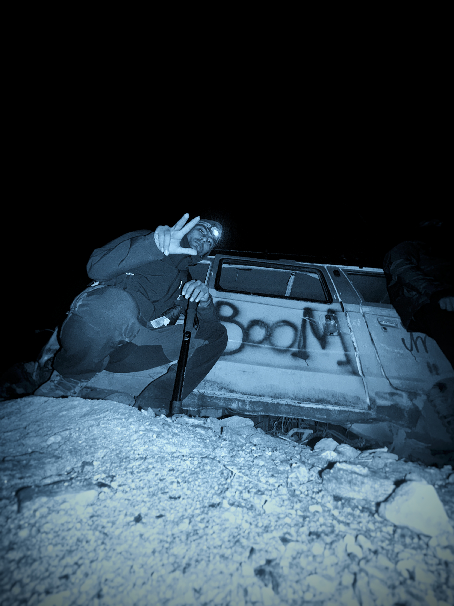
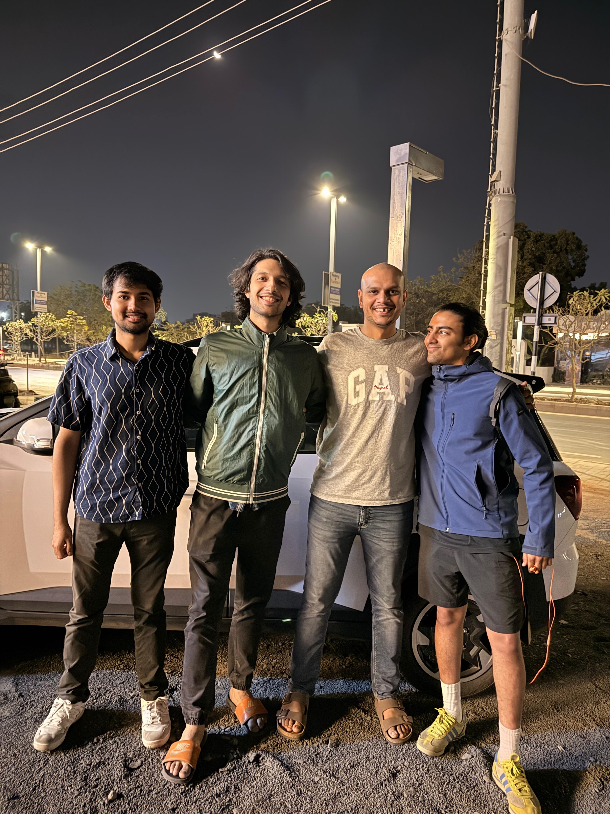
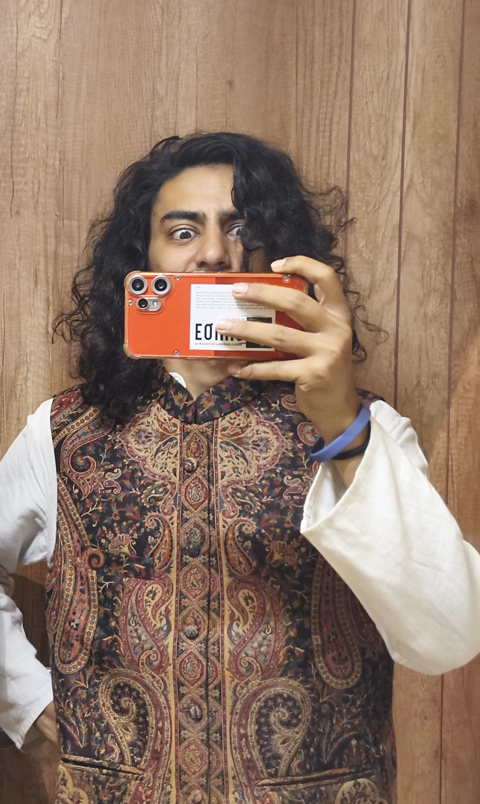

thinker / problem solver / artist
I spend my time thinking about machine learning, building things that probably don't need to exist, and occasionally wondering why I chose this path — then immediately writing more code.
I've been fascinated by how computers learn to see and understand the world, from the days of ConvNets ruling vision tasks to the transformer revolution that quietly dethroned them.
Currently exploring the intersection of language models, local AI, and whatever rabbit hole I stumbled into this week.
a thinker who analyses a situation from 1000 ways just to realise it was for ordering a pizza.
Will solve a Rubik's cube blindfolded but will be blindsided by the fact that a triangular matrix is a square.
Projects
- DeiT — Vision Transformer Implementation At a time when the entire computer vision world was betting on CNNs, this project identified the inflection point early. An implementation of Facebook AI's Data-Efficient Image Transformer from scratch — a model that matches Google's ViT performance using 250x less training data. Not tutorial code; this is someone who read the research, understood it deeply enough to implement it, and documented the journey.
- Statistics & Python = ML Most people learn ML by copying Kaggle notebooks. This goes back to first principles — building the mathematical foundation that every ML model stands on. The work of someone who refuses to be a blackbox engineer and insists on understanding why things work, not just that they work.
- Dialogflow — Conversational AI Built a working NLP pipeline using Google's Dialogflow before conversational AI became the buzzword it is today. Early signal of someone tracking where the industry was heading and building hands-on intuition before the hype arrived.
- Why Children Don't Go to School Used real government data from Gujarat, Diu & Daman to analyse a genuine social problem through code. Technical skill applied to things that actually matter. Data science with a conscience.
- Meme Classifier — fast.ai Trained a computer vision model to classify memes — notoriously hard due to cultural context, sarcasm, and visual noise. Using fast.ai to crack this is the mark of someone who picks interesting hard problems for sport.
Writing
- 22 Jan 2021 The Rise and Fall of the CNN
Around

